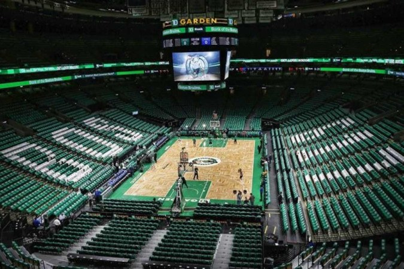

Boston Celtics - O Boston Celtics é uma das franquias mais tradicionais e vencedoras da NBA, fundada em 1946. Com uma história repleta de conquistas, o time é conhecido por ter dominado a NBA especialmente nas décadas de 1960, com a liderança de lendas como Bill Russell. Em 2024, os Celtics conquistaram seu 18º título, o maior número da liga, consolidando sua rivalidade histórica com o Los Angeles Lakers.
Ao longo dos anos, grandes estrelas como Larry Bird, Paul Pierce e, mais recentemente, Jayson Tatum, têm levado o Celtics ao sucesso. A equipe continua forte na disputa, com uma base sólida de jogadores e a missão de manter o legado e a competitividade da franquia.
Elenco - Jayson Tatum (#0), Jaylen Brown (#7), Kristaps Porzingis (#8), Derrick White (#9), Jrue Holiday (#4), Al Horford (#42), Payton Pritchard (#11), Jordan Walsh (#27).
Títulos da NBA - 18 (1957, 1959-66, 1968, 1969, 1974, 1976, 1981, 1984, 1986, 2008, 2024)
Títulos de Conferência - 22 (1957-66, 1968, 1969, 1974, 1976, 1981, 1984, 1985, 1987, 2008, 2010, 2022, 2024)
Estádio - TD Garden - (18.624)
